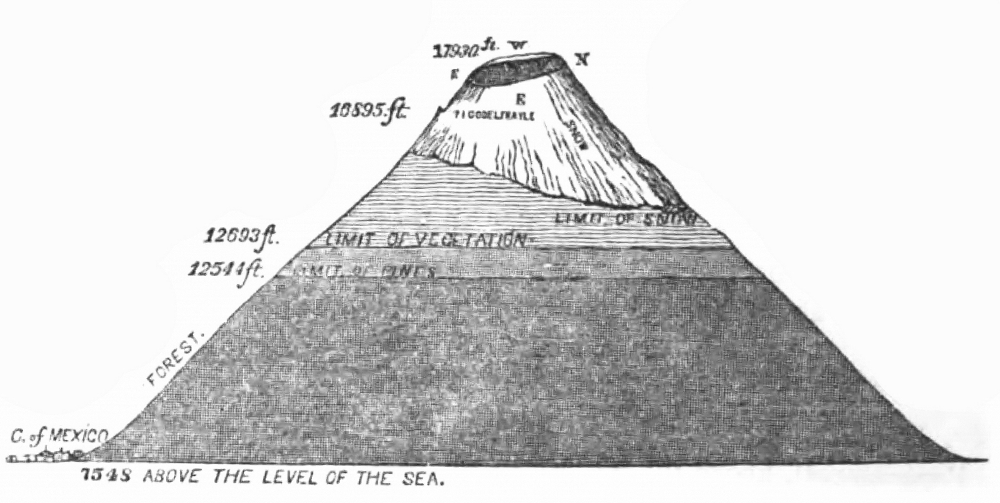

Tamaño
De apariencia casi simétrica, cubre una superficie de 283,192.53 hectáreas y tiene una altura de 5,426 metros sobre el nivel del mar. Posee un cráter elíptico de paredes empinadas con una profundidad de 150 metros desde el labio inferior, un diámetro mayor de 900 metros y un ancho total de 400 x 600 metros.

Antigüedad
El Popocatépetl es un volcán geológicamente joven. Se cree que tiene unos 730,000 años de antigüedad y que es remanente de volcanes antiguos que colapsaron. Su historia comenzó con la formación del volcán Nexpayantla a través de la expulsión de flujos de lava andesítica y dacítica. Años después, este volcán colapsó y en consecuencia se formó una caldera, es decir, una depresión amplia y profunda debajo de la cual se halla una cámara de magma.
Localización
El Popocatépetl esta ubicado en los estados de Morelos, Puebla (45 kilometros) y el Estado de México( a 55 kilometros). Al sur de la Sierra Volcánica Transversal que constituye la espina dorsal del Altiplano Mexicano.
En el Estado de México colinda con los municipios: Tlamanalco, Amecameca, Atlauta y Ecatzingo.
Con el estado de Morelos colinda específicamente con el municipio de Tetela del Volcán.
Por la parte de Puebla colinda con Huejotzingo, San Salvador el Verde, Domingo Arenas, San Nicolás de los Ranchos y Tochimilco.
Actividad
Ha tenido por lo menos cuatro erupciones explosivas que colapsaron el cono, dando como resultado enormes derrumbes prehistóricos de enormes proporciones.
Hace 14,000 años ocurrió una gran erupción que produjo abundantes lluvias de ceniza y piedra pómez. Durante los siguientes12 milenios han sucedido por lo menos seis grandes erupciones explosivas. La última gran erupción ocurrió aproximadamente entre los años 800 y 1,000 de nuestra era.
1363 Comienza a humear.
1509
1512
1519 y 1528 arroja humo, cenizas y piedras incandescentes.
1530 produce solo humo.
1539 lanza grandes llamas, piedras y cenizas.
1562.
1570 Para este año incrementó la actividad sísmica.
1571 Arrojó gran cantidad de cenizas.
1592 Arrojó vapores y cenizas.
1642.
1663 Arroja gran cantidad de ceniza y con ella piedras pómez.
1664.
1665 Estuvo arrojando cenizas por varios días.
1697 Hizo una erupción de fuego.
1720 Registró una nueva erupción.
1790, 1802 y 1804 Arrojaba una columna de humo.
1919: La erupción registrada en este año fue considerada por algunos como consecuencia de una explosión de dinamita provocada para la extracción de azufre. Los orígenes de esta actividad la inició Hernán Cortés en 1519 cuando mandó a Diego de Ordaz a que subiera el Popo pero no logró alcanzar el cráter; en cambio al año siguiente otros soldados sacaron azufre para fabricar pólvora.
En 1947 ocurrió una erupción de consideración, para iniciar así un periodo de actividad.
A lo largo de 1992 y 1993 aumentaron las fumarolas y los microsismos.
21 de diciembre de 1994 registró una explosión que produjo gas y cenizas que fueron transportados por los vientos dominantes, llegando llegaron más allá del Estado de Puebla. Cabe señalar que en este año los monasterios del siglo XVI construidos en las laderas del volcán, fueron declarados Patrimonio de la Humanidad por la UNESCO.
1995 Registro una actividad fluctuante.
Marzo de 1996: En esta año aumentó la actividad y se formó un domo en el cráter.
30 de abril de 1996, El popo lanza una lluvia de piedras incandescentes, provocando la muerte de cinco expertos alpinistas que exploraban el volcán. Durante este año también se registraron varios microsismos.
El 30 de junio de 1997 lanzó una fumarola de 8 kilómetros de altura y 50 kilómetros de diámetro.
20 de junio del 2003.
21 de septiembre del 2003.
25 de diciembre de 2005: Se produjo una nueva explosión que provocó una columna de humo y cenizas de tres kilómetros de altura y la expulsión de lava.
Como el volcán esta activo, es constantemente vigilado y existen planes de emergencia por si hay necesidad de evacuar a los 23 pueblos que viven en sus faldas. Los encargados son el Centro Nacional de Prevención de Desastres CENAPRED, que opera en la Ciudad Universitaria, en la capital del país.
Monitoreo
Condiciones de viento actuales: La circulación del viento que se observa desde capas inmediatas inferiores al cráter y hasta 5000 metros en la vertical, presenta una dirección de oeste a este con una velocidad que oscila de 20 a 90 km/h. Interpretación de los modelos de pronóstico meteorológico: En el transcurso de esta noche y primeras horas del día de mañana, el perfil del viento no presentará mayores cambios en rumbo e intensidad. Consecuencia: Si el volcán llegara a presentar exhalaciones importantes, la pluma de ceniza sería llevada por el viento hacia la región centro-occidental del estado de Puebla. No hay condiciones para que la Zona Metropolitana del Valle de México pudiera resultar afectada.